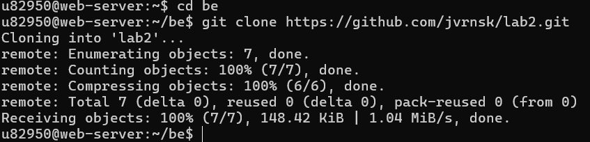
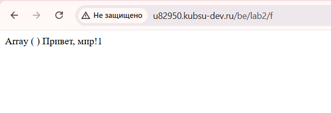

Жайворонская u82950
ПИ 21/1
Лабораторная работа №2
HTTP-запросЫ
Клонирование файлов<

В самом начале выполнения работы я подключилась к серверу kubsu-dev.ru по SSH, а затем скопировала файлы с гитхаба при помощи git clone с http подключением.
Проверка работоспособности

Для проверки работоспособности файла index.php я выполнила переход по прямой ссылке в браузере.
В результате успешно открылась веб-страница, на которой отобразился массив данных (Array) и сообщение «Привет мир».
Это подтверждает корректное выполнение PHP-кода на сервере и успешную обработку скрипта интерпретатором PHP.
1. Получение главной страницы методом GET (HTTP/1.0)

Был отправлен запрос GET / HTTP/1.0 для получения главной страницы сайта. В ответ сервер вернул код состояния 200 OK, а также заголовки ответа и содержимое
запрашиваемого ресурса. Протокол HTTP/1.0 является одной из первых версий HTTP и предполагает передачу запроса без обязательного указания имени виртуального
хоста. После завершения передачи данных соединение, как правило, закрывается сервером.
2. Получение внутренней страницы методом GET (HTTP/1.1)

Был отправлен запрос GET к внутренней странице сайта с использованием протокола HTTP/1.1. В ответ был получен корректный код состояния, заголовки ответа и
содержимое запрашиваемой страницы. Особенностью HTTP/1.1 является обязательное использование заголовка Host, содержащий доменное имя сервера, который позволяет
веб-серверу определять, к какому именно сайту следует направить запрос при размещении нескольких сайтов на одном сервере.
3. Определение размера файла file.tar.gz

Был отправлен запрос HEAD /file.tar.gz HTTP/1.1 с указанием заголовка Host. Метод HEAD позволяет получить только заголовки ответа без передачи тела ресурса,
поэтому файл не скачивался. Размер файла был определён по значению заголовка Content-Length, содержащему длину содержимого в байтах.
4. Определение медиатипа ресурса image.png

Отправлен запрос HEAD /image.png HTTP/1.1 с указанием заголовка Host. В ответ сервер вернул заголовки ресурса без передачи его содержимого. Медиатип файла
был определён по значению заголовка Content-Type, который содержит информацию о типе передаваемых данных. Для изображения формата PNG сервер вернул значение
image/png, что подтверждает корректное определение типа ресурса.
5. Отправка комментария на сервер методом POST

На сервер отправлен комментарий посредством HTTP-запроса POST к ресурсу index.php. Сервер успешно обработал переданные данные.
6. Получение первых 100 байт файла file.tar.gz

HTTP-запрос методом POST к ресурсу index.php. В запросе были указаны обязательные заголовки Host, Content-Type и Content-Length, а также передано тело запроса
с данными комментария. Сервер обработал полученные данные и вернул ответ с результатом выполнения скрипта. Метод POST используется для передачи данных на сервер,
которые могут изменять его состояние или обрабатываться серверным приложением, в отличие от метода GET, предназначенного только для получения информации.
7. Определение кодировки ресурса index.php

запрос HEAD /index.php HTTP/1.1 с указанием заголовка Host. В ответ сервер вернул только заголовки ресурса без его содержимого. Кодировка страницы была определена
по параметру charset, указанному в заголовке Content-Type. В данном случае значение charset указывает используемую кодировку символов UTF-8, что
позволяет корректно интерпретировать текстовое содержимое веб-страницы.
UTF-8 — это универсальная кодировка символов Unicode, которая позволяет корректно отображать текст на разных языках и является стандартом для веб-страниц. Она преобразует
символы в последовательность байтов и поддерживает практически все письменные системы мира, включая русский и английский языки.